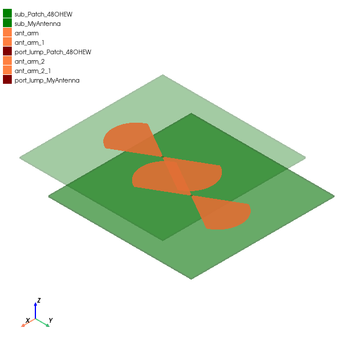

Bowtie antenna synthesis#
This example demonstrates how to synthesize a bowtie antenna using the BowTieRounded class. It initiates AEDT through PyAEDT, sets up an empty HFSS design, and proceeds to create the antenna.
Perform required imports#
Import the antenna toolkit class and PyAEDT.
[1]:
import tempfile
[2]:
import ansys.aedt.core
[3]:
from ansys.aedt.toolkits.antenna.backend.antenna_models.bowtie import BowTieRounded
Set AEDT version#
Set AEDT version.
[4]:
aedt_version = "2024.2"
Set non-graphical mode#
Set non-graphical mode.
[5]:
non_graphical = True
Create temporary directory#
[6]:
temp_dir = tempfile.TemporaryDirectory(suffix="_ansys")
project_name = ansys.aedt.core.generate_unique_project_name(root_name=temp_dir.name, project_name="bowtie_example")
Create antenna object only for synthesis#
Create antenna object.
[7]:
oantenna1 = BowTieRounded(None)
print(
"Arm length: {}{} at {}{}".format(
str(oantenna1.synthesis_parameters.arm_length.value),
oantenna1.length_unit,
oantenna1.frequency,
oantenna1.frequency_unit,
)
)
Arm length: 3.7mm at 10.0GHz
Change synthesis frequency#
Modify resonance frequency and modify parameters.
[8]:
oantenna1.frequency = 12.0
print(
"Arm length: {}{} at {}{}".format(
str(oantenna1.synthesis_parameters.arm_length.value),
oantenna1.length_unit,
oantenna1.frequency,
oantenna1.frequency_unit,
)
)
Arm length: 3.03mm at 12.0GHz
Create an empty HFSS design#
Create an empty HFSS design.
[9]:
app = ansys.aedt.core.Hfss(project=project_name, version=aedt_version, non_graphical=non_graphical)
PyAEDT INFO: Python version 3.10.11 (tags/v3.10.11:7d4cc5a, Apr 5 2023, 00:38:17) [MSC v.1929 64 bit (AMD64)]
PyAEDT INFO: PyAEDT version 0.11.0.
PyAEDT INFO: Initializing new Desktop session.
PyAEDT INFO: Log on console is enabled.
PyAEDT INFO: Log on file C:\Users\ansys\AppData\Local\Temp\pyaedt_ansys_997fc55a-9ab3-4770-876a-f00fdab9125f.log is enabled.
PyAEDT INFO: Log on AEDT is enabled.
PyAEDT INFO: Debug logger is disabled. PyAEDT methods will not be logged.
PyAEDT INFO: Launching PyAEDT with gRPC plugin.
PyAEDT INFO: New AEDT session is starting on gRPC port 58536
PyAEDT INFO: AEDT installation Path C:\Program Files\AnsysEM\v242\Win64
PyAEDT INFO: Ansoft.ElectronicsDesktop.2024.2 version started with process ID 1288.
PyAEDT INFO: Project bowtie_example has been created.
PyAEDT INFO: No design is present. Inserting a new design.
PyAEDT INFO: Added design 'HFSS_LM2' of type HFSS.
PyAEDT INFO: Aedt Objects correctly read
Create antenna in HFSS#
Create antenna object, change frequency synthesis, create antenna, and set up in HFSS.
[10]:
oantenna1 = BowTieRounded(app)
PyAEDT INFO: Modeler class has been initialized! Elapsed time: 0m 1sec
PyAEDT INFO: Materials class has been initialized! Elapsed time: 0m 0sec
[11]:
# Create antenna in HFSS.
oantenna1.model_hfss()
PyAEDT INFO: Parsing design objects. This operation can take time
PyAEDT INFO: Parsing C:/Users/ansys/AppData/Local/Temp/tmpiysekmbo_ansys/pyaedt_prj_EEM/bowtie_example.aedt.
PyAEDT INFO: File C:/Users/ansys/AppData/Local/Temp/tmpiysekmbo_ansys/pyaedt_prj_EEM/bowtie_example.aedt correctly loaded. Elapsed time: 0m 0sec
PyAEDT INFO: aedt file load time 0.015619993209838867
PyAEDT INFO: 3D Modeler objects parsed. Elapsed time: 0m 0sec
PyAEDT INFO: Union of 2 objects has been executed.
Create antenna setup.
[12]:
oantenna1.setup_hfss()
PyAEDT INFO: Boundary Perfect E PerfE_9FMDNS has been correctly created.
PyAEDT INFO: Boundary Perfect E PerfE_X11TSU has been correctly created.
PyAEDT INFO: Boundary AutoIdentify port_Patch_48OHEW_1 has been correctly created.
[12]:
True
Change default name.
[13]:
oantenna1.name = "MyAmazingAntenna"
Create antenna in HFSS#
Create antenna object, change origin parameter in the antenna definition, create antenna, and set up in HFSS.
[14]:
oantenna2 = BowTieRounded(app, origin=[2, 5, 0], name="MyAntenna")
oantenna2.model_hfss()
oantenna2.setup_hfss()
PyAEDT INFO: Union of 2 objects has been executed.
PyAEDT INFO: Boundary Perfect E PerfE_M15FXX has been correctly created.
PyAEDT INFO: Boundary Perfect E PerfE_F94RWY has been correctly created.
PyAEDT INFO: Boundary AutoIdentify port_MyAntenna_1 has been correctly created.
[14]:
True
Plot HFSS model#
Plot geometry with PyVista.
[15]:
app.plot()
PyAEDT INFO: PostProcessor class has been initialized! Elapsed time: 0m 0sec
PyAEDT INFO: Post class has been initialized! Elapsed time: 0m 0sec
C:\Users\Public\actions-runner\_work\pyaedt-toolkits-antenna\pyaedt-toolkits-antenna\.venv\lib\site-packages\pyvista\jupyter\notebook.py:37: UserWarning: Failed to use notebook backend:
No module named 'trame'
Falling back to a static output.
warnings.warn(

[15]:
<ansys.aedt.core.visualization.plot.pyvista.ModelPlotter at 0x178d13dc6b0>
Release AEDT#
Release AEDT.
[16]:
app.release_desktop(True, True)
PyAEDT INFO: Desktop has been released and closed.
[16]:
True
Clean temporary directory#
[17]:
temp_dir.cleanup()